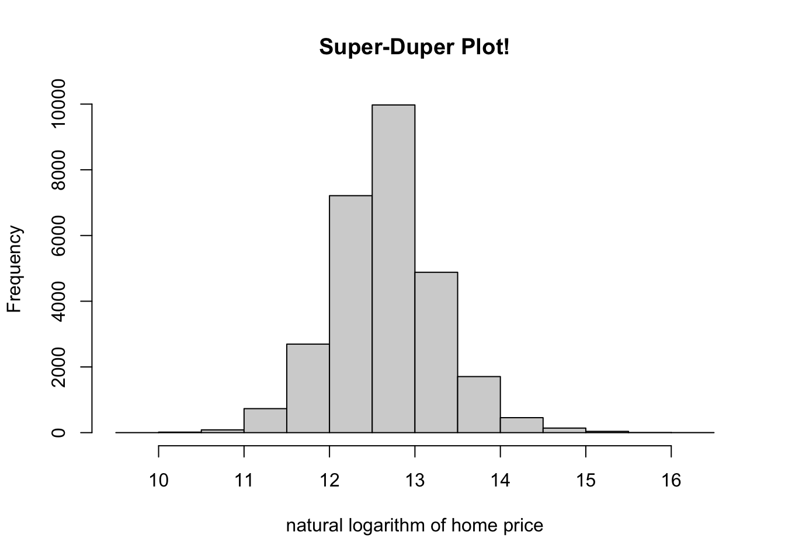

Chapter 3 R vectors versus Numpy arrays and Pandas’ Series
This section is for describing the data types that let us store collections of elements that all share the same type. Data is very commonly stored in this fashion, so this section is quite important. Once we have one of these collection objects in a program, we will be interested in learning how to extract and modify different elements in the collection, as well as how to use the entire collection in an efficient calculation.
3.1 Overview of R
In the previous section, I mentioned that R does not have scalar types–it just has vectors. So, whether you want to store one number (or logical, or character, or …), or many numbers, you will need a vector.
For many, the word “vector” evokes an impression that these objects are designed to be used for performing matrix arithmetic (e.g. inner products, transposes, etc.). You can perform these operations on vectors, but in my opinion, this preconception can be misleading, and I recommend avoiding it. Most of the things you can do with vectors in R have little to do with linear algebra!
How do we create one of these? There are many ways. One common way is to read in elements from an external data set. Another way is to generate vectors from code.
1:10 # consecutive integers
## [1] 1 2 3 4 5 6 7 8 9 10
seq(1,10,2) # arbitrary sequences
## [1] 1 3 5 7 9
rep(2,5) # repeating numbers
## [1] 2 2 2 2 2
c("5/2/2021", "5/3/2021", "5/4/2021") # combine elements without relying on a pattern
## [1] "5/2/2021" "5/3/2021" "5/4/2021"
rnorm(10) # generate Gaussian random variables
## [1] 0.83917455 -1.30118333 -1.70706374 -0.16047073 0.96296025 -1.14865229 0.11628864 0.04191289 -0.52490085
## [10] 0.69238727c() is short for “combine.” seq() and rep() are short for “sequence” and “replicate,” respectively. rnorm() samples normal (or Gaussian) random variables. There is plenty more to learn about these functions, so I encourage you to take a look at their documentation.
I should mention that functions such as rnorm() don’t create truly random numbers, just pseudorandom ones. Pseudorandom numbers are nearly indecipherable from truly random ones, but the way the computer generates them is actually deterministic.
First, a seed, or starting number is chosen. Then, the pseudorandom number generator (PRNG) maps that number to another number. The sequence of all the numbers appears to be random, but is actually deterministic.
Sometimes you will be interested in setting the seed on your own because it is a cheap way of sharing and communicating data with others. If two people use the same starting seed, and the same PRNG, then they should simulate the same data. This can be important if you want to help other people reproduce the results of code you share. Most of the time, though, I don’t set the seed, and I don’t think about the distinction between random and pseudorandom numbers.
3.2 Overview of Python
If you want to store many elements of the same type (and size) in Python, you will probably need a Numpy array. Numpy is a highly-regarded third party library (Harris et al. 2020) for Python. Its array objects store elements of the same type, just as R’s vectors do.
There are five ways to create numpy arrays (source). Here are some examples that complement the examples from above.
import numpy as np
np.array([1,2,3])
## array([1, 2, 3])
np.arange(1,12,2)
## array([ 1, 3, 5, 7, 9, 11])
np.random.normal(size=3)
## array([1.66224409, 1.28891169, 1.3371926 ])Another option for storing a homogeneous collection of elements in Python is a Series object from the Pandas library. The benefit of these is that they play nicely with Pandas’ data frames (more information about Pandas’ data frames can be found in 8.2), and that they have more flexibility with accessing elements by name ( see here for more information ).
import pandas as pd
first = pd.Series([2, 4, 6])
second = pd.Series([2, 4, 6], index = ['a','b','c'])
print(first[0])
## 2
print(second['c'])
## 63.3 Vectorization in R
An operation in R is vectorized if it applies to all of the elements of a vector at once. An operator that is not vectorized can only be applied to individual elements. In that case, the programmer would need to write more code to instruct the function to be applied to all of the elements of a vector. You should prefer writing vectorized code because it is usually easier to read. Moreover, many of these vectorized functions are written in compiled code, so they can often be much faster.
Arithmetic (e.g. +, -, *, /, ^, %%, %/%, etc.) and logical (e.g. !, |, &, >, >=, <, <=, ==, etc.) operators are commonly applied to one or two vectors. Arithmetic is usually performed element-by-element. Numeric vectors are converted to logical vectors if they need to be. Be careful of operator precedence if you seek to minimize your use of parentheses.
Note that there are an extraordinary amount of named functions (e.g. sum(), length(), cumsum(), etc.) that operate on entire vectors, as well. Here are some examples.
(1:3) * (1:3)
## [1] 1 4 9
(1:3) == rev(1:3)
## [1] FALSE TRUE FALSE
sin( (2*pi/3)*(1:5))
## [1] 8.660254e-01 -8.660254e-01 -2.449294e-16 8.660254e-01 -8.660254e-01In the last example, there is recycling happening. (2*pi/3) is taking three length-one vectors and producing another length-one vector. The resulting length-one vector is multiplied by a length five vector 1:5. The single element in the length one vector gets recycled so that its value is multiplied by every element of 1:5.
This makes sense most of the time, but sometimes recycling can be tricky. Notice that the following code does not produce an error–just a warning.
(1:3) * (1:4)
## Warning in (1:3) * (1:4): longer object length is not a multiple of shorter object length
## [1] 1 4 9 43.4 Vectorization in Python
The Python’s Numpy library makes extensive use of vectorization as well. Vectorization in Numpy is accomplished with universal functions, or “ufuncs” for short. Some ufuncs can be invoked using the same syntax as in R (e.g. +). You can also refer to function by its name (e.g. np.sum() instead of +). Mixing and matching is allowed, too.
Ufuncs are called unary if they take in one array, and binary if they take in two. At the moment, there are fewer than \(100\) available, all performing either mathematical operations, boolean-emitting comparisons, or bit-twiddling operations. For an exhaustive list of Numpy’s universal functions, click here. Here are some code examples.
np.arange(1,4)*np.arange(1,4)
## array([1, 4, 9])
np.zeros(5) > np.arange(-3,2)
## array([ True, True, True, False, False])
np.exp( -.5 * np.linspace(-3, 3, 10)**2) / np.sqrt( 2 * np.pi)
## array([0.00443185, 0.02622189, 0.09947714, 0.24197072, 0.37738323,
## 0.37738323, 0.24197072, 0.09947714, 0.02622189, 0.00443185])Instead of calling it “recycling,” Numpy calls reusing elements of a shorter array in a binary operation broadcasting. It’s the same idea as in R, but in general, Python is stricter and disallows more scenarios.
np.arange(1,3)*np.arange(1,4)
## Error in py_call_impl(callable, dots$args, dots$keywords): ValueError: operands could not be broadcast together with shapes (2,) (3,)If you are working with string arrays, Numpy has a np.char module with many useful functions.
a = np.array(['a','b','c'])
np.char.upper(a)
## array(['A', 'B', 'C'], dtype='<U1')Then there are the Series objects from Pandas. Ufuncs continue to work in the same way on Series objects, and they respect common index values.
s1 = pd.Series(np.repeat(100,3))
s2 = pd.Series(np.repeat(10,3))
s1 + s2
## 0 110
## 1 110
## 2 110
## dtype: int64If you feel more comfortable, and you want to coerce these Series objects to Numpy arrays before working with them, you can do that. For example, the following works.
s = pd.Series(np.linspace(-1,1,5))
np.exp(s.to_numpy())
## array([0.36787944, 0.60653066, 1. , 1.64872127, 2.71828183])In addition, Series objects possess many extra attributes and methods.
ints = pd.Series(np.arange(10))
ints.abs()
## 0 0
## 1 1
## 2 2
## 3 3
## 4 4
## 5 5
## 6 6
## 7 7
## 8 8
## 9 9
## dtype: int64
ints.mean()
## 4.5
ints.floordiv(2)
## 0 0
## 1 0
## 2 1
## 3 1
## 4 2
## 5 2
## 6 3
## 7 3
## 8 4
## 9 4
## dtype: int64Series objects that have text data are a little bit different. For one, you have to access the .str attribute of the Series before calling any vectorized methods. Here are some examples.
s = pd.Series(['a','b','c','33'])
s.dtype## dtype('O')s.str.isdigit()## 0 False
## 1 False
## 2 False
## 3 True
## dtype: bools.str.replace('a', 'z')## 0 z
## 1 b
## 2 c
## 3 33
## dtype: objectString operations can be a big game changer, and we discuss text processing strategies in more detail in section @(working-with-text-data).
3.5 Indexing Vectors in R
It is very common to want to extract or modify a subset of elements in a vector. There are a few ways to do this. All of the ways I discuss will involve the square bracket operator (i.e. []). Feel free to retrieve the documentation by typing ?'['.
allElements <- 1:6
allElements[seq(2,6,2)] # extract evens
## [1] 2 4 6
allElements[-seq(2,6,2)] <- 99 # replace all odds with 99
allElements[allElements > 2] # get nums bigger than 2
## [1] 99 99 4 99 6To access the first element, we use the index 1. To access the second, we use 2, and so on. Also, the - sign tells R to remove elements. Both of these functionalities are very different from Python, as we will see shortly.
We can use names to access elements elements, too, but only if the elements are named.
sillyVec <- c("favorite"=1, "least favorite" = 2)
sillyVec['favorite']
## favorite
## 13.6 Indexing Numpy arrays
Indexing Numpy arrays is very similar to indexing vectors in R. You use the square brackets, and you can do it with logical arrays or index arrays. There are some important differences, though.
For one, indexing is 0-based in Python. The 0th element is the first element of an array. Another key difference is that the - isn’t used to remove elements like it is in R, but rather to count backwards. Third, using one or two : inside square brackets is more flexible in Python. This is syntactic sugar for using the slice() function, which is similar to R’s seq() function.
one_through_ten = np.arange(1, 11)
one_through_ten[np.array([2,3])]
## array([3, 4])
one_through_ten[1:10:2] # evens
## array([ 2, 4, 6, 8, 10])
one_through_ten[::-1] # reversed
## array([10, 9, 8, 7, 6, 5, 4, 3, 2, 1])
one_through_ten[-2] = 99 # second to last
one_through_ten
## array([ 1, 2, 3, 4, 5, 6, 7, 8, 99, 10])
one_through_ten[one_through_ten > 3] # bigger than three
## array([ 4, 5, 6, 7, 8, 99, 10])3.7 Indexing Pandas’ Series
At a minimum, there is little that is new that you need to learn to go from Numpy arrays to Pandas’ Series objects. They still have the [] operator, and many methods are shared across these two types. The following is almost equivalent to the code above, and the only apparent difference is that the results are printed a little differently.
import pandas as pd
one_through_ten = pd.Series(np.arange(1, 11))
one_through_ten[np.array([2,3])]
## 2 3
## 3 4
## dtype: int64
one_through_ten[1:10:2] # evens
## 1 2
## 3 4
## 5 6
## 7 8
## 9 10
## dtype: int64
one_through_ten[::-1] # reversed
## 9 10
## 8 9
## 7 8
## 6 7
## 5 6
## 4 5
## 3 4
## 2 3
## 1 2
## 0 1
## dtype: int64
one_through_ten[-2] = 99 # second to last
one_through_ten
## 0 1
## 1 2
## 2 3
## 3 4
## 4 5
## 5 6
## 6 7
## 7 8
## 8 9
## 9 10
## -2 99
## dtype: int64
one_through_ten[one_through_ten > 3] # bigger than three
## 3 4
## 4 5
## 5 6
## 6 7
## 7 8
## 8 9
## 9 10
## -2 99
## dtype: int64
one_through_ten.sum()
## 154However, Pandas’ Series have .loc and .iloc methods. We won’t talk much about these two methods now, but they will become very important when we start to discuss Pandas’ data frames in section 8.2.
one_through_ten.iloc[2]
## 3
one_through_ten.loc[2]
## 33.8 Some Gotchas
3.8.1 Shallow versus Deep Copies
In R, assignment usually produces a deep copy. In the code below, we create b from a. If we modify b, these changes don’t affect a. This takes up more memory, but our program is easier to follow as we don’t have to keep track of connections between objects.
# in R
a <- c(1,2,3)
b <- a
b[1] <- 999
a # still the same!
## [1] 1 2 3With Numpy arrays in Python, “shallow copies” can be created by simple assignment, or by explicitly constructing a view. In the code below, a, b, c, and d all share the same data. If you modify one, you change all the others. This can make the program more confusing, but on the other hand, it can also improve computational efficiency.
# in python
a = np.array([1,2,3])
b = a # b is an alias
c = a.view() # c is a view
d = a[:]
b[0] = 999
a # two names for the same object in memory
## array([999, 2, 3])
b
## array([999, 2, 3])
c
## array([999, 2, 3])
d
## array([999, 2, 3])It’s the same story with Pandas’ Series objects. You’re usually making a “shallow” copy.
# in python
import pandas as pd
s1 = pd.Series(np.array([100.0,200.0,300.0]))
s2 = s1
s3 = s1.view()
s4 = s1[:]
s1[0] = 999
s1
## 0 999.0
## 1 200.0
## 2 300.0
## dtype: float64
s2
## 0 999.0
## 1 200.0
## 2 300.0
## dtype: float64
s3
## 0 999.0
## 1 200.0
## 2 300.0
## dtype: float64
s4
## 0 999.0
## 1 200.0
## 2 300.0
## dtype: float64If you want a “deep copy” in Python, you usually want a function or method called copy(). Use np.copy or np.ndarray.copy when you have a Numpy array.
# in python
a = np.array([1,2,3])
b = np.copy(a)
c = a.copy()
b[0] = 999
a
## array([1, 2, 3])
b
## array([999, 2, 3])
c
## array([1, 2, 3])Use pandas.Series.copy with Pandas’ Series objects. Make sure not to set the deep argument to False. Otherwise you’ll get a shallow copy.
# in python
s1 = pd.Series(np.array([1,2,3]))
s2 = s1.copy()
s3 = s1.copy(deep=False)
s1[0] = 999
s1
## 0 999
## 1 2
## 2 3
## dtype: int64
s2
## 0 1
## 1 2
## 2 3
## dtype: int64
s3
## 0 999
## 1 2
## 2 3
## dtype: int643.9 How do R and Python handle missing values?
R has NULL, NaN, and NA. Python has None and np.nan. If your eyes are glazing over already and you’re thinking “they all look like the same”–they are not.
R’s NULL and Python’s None are similar. Both represent “nothingness.” This is not the same as 0, or an empty string, or FALSE/False. This is commonly used to detect if a user fails to pass in an argument to a function, or if a function fails to “return” (more information on functions can be found in section 6) anything meaningful.
In R, for example, if a function fails to return anything, then it actually returns a NULL. A NULL object has its own type.
NULL == FALSE
## logical(0)
NULL == NULL
## logical(0)
# create a function that doesn't return anything
# more information on this later
doNothingFunc <- function(a){}
thing <- doNothingFunc() # call our new function
is.null(thing)
## [1] TRUE
typeof(NULL)
## [1] "NULL"In Python, we have the following.
None == False
## False
None == None
# create a function that doesn't return anything
# more information on this later
## True
def do_nothing_func():
pass
thing = do_nothing_func()
if thing is None:
print("thing is None!")
## thing is None!
type(None)
## <class 'NoneType'>“NaN” abbreviates “not a number.” NaN is an object of type double in R, and np.nan is of type float in Python. It can come in handy when you (deliberately or accidentally) perform undefined calculations such as \(0/0\) or \(\infty / -\infty\).
# in R
0/0
## [1] NaN
Inf/Inf
## [1] NaN
is.na(0/0)
## [1] TRUE# in Python
0/0
## Error in py_call_impl(callable, dots$args, dots$keywords): ZeroDivisionError: division by zero
import numpy as np
np.inf/np.inf
## nan
np.isnan(np.nan)
## True“NA” is short for “not available.” Missing data is a fact of life in data science. Observations are often missing in data sets, introduced after joining/merging data sets together (more on this in section 12.3), or arise from calculations involving underflow and overflow. There are many techniques designed to estimate quantities in the presence of missing data. When you code them up, you’ll need to make sure you deal with NAs properly.
# in R
babyData <- c(0,-1,9,NA,21)
NA == TRUE
## [1] NA
is.na(babyData)
## [1] FALSE FALSE FALSE TRUE FALSE
typeof(NA)
## [1] "logical"Unfortunately, Python’s support of an NA-like object is more limited. There is no NA object in base Python. And often NaNs will appear in place of an NA. There are a few useful tools, though. The Numpy library offers “masked arrays”, for instance.
Also, as of version 1.0.0, the pandas library has an experimental pd.NA object. However, they warn that “the behaviour of pd.NA can still change without warning.”
import numpy as np
import numpy.ma as ma
baby_data = ma.array([0,-1,9,-9999, 21]) # -9999 "stands for" missing
baby_data[3] = ma.masked
np.average(baby_data)
## 7.25Be careful of using extreme values to stand in for what should be an NA. Be aware that some data providers will follow this strategy. I recommend that you avoid it yourself. Failing to represent a missing value correctly would lead to extremely wrong calculations!
3.10 Exercises
3.10.1 R Questions
Let’s flip some coins! Generate a thousand flips of a fair coin. Use
rbinom, and let heads be coded as1and tails coded as0.- Assign the thousand raw coin flips to a variable
flips. Make sure the elements are integers, and make sure you flip a “fair” coin (\(p=.5\)). - Create a length
1000logicalvectorcalledisHeads. Whenever you get a heads, make sure the corresponding element isTRUEandFALSEotherwise. - Create a variable called
numHeadsby tallying up the number of heads. - Calculate the percent of time that the number changes in
flips. Assign your number toacceptanceRate. Try to write only one line of code to do this.
- Assign the thousand raw coin flips to a variable
Say you have a
vectorof prices of some financial asset:
prices <- c(100.10, 95.98, 100.01, 99.87)Convert this vector into a vector of log returns. Call the variable
logReturns. If \(p_t\) is the price at time \(t\), the log return ending at time \(t\) is \[ r_t = \log \left( \frac{p_t}{p_{t-1}} \right) = \log p_t - \log p_{t-1}\]Do the same for arithmetic returns. These are regular percent changes if you scale by \(100\). Call the variable
arithReturns. The mathematical formula you need is \[ a_t = \left( \frac{p_t - p_{t-1} }{p_{t-1}} \right) \times 100 \]
- Consider another mixture density \(f(y) = \int f(y \mid x) f(x) dx\) where
\[ Y \mid X = x \sim \text{Normal}(0, x^2) \] and
\[ X \sim \text{half-Cauchy}(0, 1). \] This distribution is a special case of a prior distribution that is used in Bayesian statistics (Carvalho, Polson, and Scott 2009).
Suppose further that you are interested in calculating the probability that one of these random variables ends up being too far from the median:
\[ \mathbb{P}[|Y| > 1] = \int_{y : |y| > 1} f(y)dy = \int_{y : |y| > 1} \int_{-\infty}^\infty f(y \mid x) f(x) dx dy. \]
Simulate \(X_1, \ldots, X_{5000}\) from a \(\text{half-Cauchy}(0, 1)\) and call these samples
xSamps. Hint: you can simulate from a \(t\) distribution with one degree of freedom to sample from a Cauchy. Once you have regular Cauchy samples, take the absolute value of each one.Simulate \(Y_1 \mid X_1, \ldots, Y_{5000} \mid X_{5000}\) and call the samples
ySamps.Calculate the approximate probability using
ySampsand call itapproxProbDev1.Why is simply “ignoring”
xSamps, the samples you condition on, “equivalent” to “integrating out \(x\)?” Store a string response as a length \(1\) character vector calledintegratingOutResp.Calculate another Rao-Blackwellized Monte Carlo estimate of \(\mathbb{P}[|Y| > 1]\) from
xSamps. Call itapproxProbDev2. Hint: \(\mathbb{P}[|Y| > 1] = \mathbb{E}[\mathbb{P}(|Y| > 1 \mid X) ]\). Calculate \(\mathbb{P}(|Y| > 1 \mid X=x)\) with pencil and paper, notice it is a function in \(x\), apply that function to each ofxSamps, and average all of it together.Are you able to calculate an exact solution to \(\mathbb{P}[|Y| > 1]\)?
- Store the ordered uppercase letters of the alphabet in a length \(26\)
charactervectorcalledmyUpcaseLetters. Do not hardcode this. Use a function, along with the variableletters.
Create a new vector called
withReplacementsthat’s the same as the previousvector, but replace all vowels with"---". Again, do not hardcode this. Find a function that searches for patterns and performs a replacement whenever that pattern is found.Create a length \(26\) logical vector that is
TRUEwhenever an element oflettersis a consonant, andFALSEeverywhere else. Call itconsonant.
3.10.2 Python Questions
Let’s flip some coins (again)! Generate a thousand flips of a fair coin. Use
np.random.binomial, and let heads be coded as1and tails coded as0.- Assign the thousand raw coin flips to a variable
flips. Make sure the elements are integers, and make sure you flip a “fair” coin (\(p=.5\)). - Create a length
1000listofbools calledis_heads. Whenever you get a heads, make sure the corresponding element isTrueandFalseotherwise. - Create a variable called
num_headsby tallying up the number of heads. - Calculate the percent of time that the number changes in
flips. Assign your number toacceptance_rate. Try to write only one line of code to do this.
- Assign the thousand raw coin flips to a variable
Use
pd.read_csvto correctly read in"2013-10_Citi_Bike_trip_data_20K.csv"as a data frame calledmy_df. Make sure to readautograding_tips.html.
extract the
"starttime"column into a separateSeriescalleds_timesextract date strings of those elements into a
Seriescalleddate_stringsextract time strings of those elements into a
Seriescalledtime_strings
- We will make use of the Monte Carlo (Robert and Casella 2005) method below. It is a technique to approximate expectations and probabilities. If \(n\) is a large number, and \(X_1, \ldots, X_n\) is a random sample drawn from the distribution of interest, then \[ \mathbb{P}(X > 6) \approx \frac{1}{n}\sum_{i=1}^n \mathbf{1}(X_i > 6). \] If you haven’t seen an indicator function before, it is defined as
\[ \mathbf{1}(X_i > 6) = \begin{cases} 1 & X_i > 6 \\ 0 & X_i \le 6 \end{cases}. \]
If you wanted to visualize it, \(\mathbf{1}(x > 6)\) looks like this.

So, the sum in this expression is just a count of the number of elements that are greater than \(6\).
Evaluate exactly the probability that a normal random variable with mean \(5\) and standard deviation \(6\) is greater than \(6\). Assign it to the variable
exact_exceedance_probin Python.Simulate \(1e3\) times from a standard normal distribution (mean 0 and variance 1). Call the samples
stand_norm_sampsCalculate a Monte Carlo estimate of \(\mathbb{P}(X > 6)\) from these samples. Call it
approx_exceedance_prob1.
- Simulate \(1e3\) times from a normal distribution with mean \(5\) and standard deviation \(6\). Call the samples
norm_samps. Don’t use the old samples in any way.
- Calculate a Monte Carlo estimate of \(\mathbb{P}(X > 6)\) from these new
norm_samps. Call itapprox_exceedance_prob2.
- Alternatively, we can approximate expectations. If \(\mathbb{E}[f(X)]\) exists, \(n\) is a large number, and \(W_1, \ldots, W_n\) is a random sample drawn from the distribution of interest, then
\[ \mathbb{E}[f(W)] \approx \frac{1}{n}\sum_{i=1}^n f(W_i). \]
Here’s a new distribution. It is a mixture distribution, specifically a finite mixture of normal distributions: \(f(y) = f(y \mid X=1)P(X=1) + f(y \mid X=0)P(X=0)\) where
\[ Y \mid X=0 \sim \text{Normal}(0, 2) \\ Y \mid X=1 \sim \text{Normal}(10, 2) \] and
\[ X \sim \text{Bernoulli}(.5). \]
Both \(f(y \mid X=0)\) and \(f(y \mid X=1)\) are bell-curved, and \(f(y)\) looks like this

Evaluate exactly \(\mathbb{E}[Y]\). Assign it to the variable
exact_meanin Python.Simulate \(1e3\) times from the Bernoulli distribution. Call the samples
bernoulli_flipsSimulate \(Y_1 \mid X_1, \ldots, Y_{1000} \mid X_{1000}\) and call the samples
cond_norm_samps.Calculate a Monte Carlo estimate of \(\mathbb{E}[Y]\) from
cond_norm_samps. Call itapprox_ave_1. Why is simply “ignoring”bernoulli_flips, the samples you condition on, “equivalent” to “integrating them out?”Calculate a Rao-Blackwellized Monte Carlo estimate of \(\mathbb{E}[Y]\) from
bernoulli_flips. Call itapprox_ave_2. Hint: \(\mathbb{E}[Y] = \mathbb{E}[\mathbb{E}(Y \mid X) ]\). Calculate \(\mathbb{E}(Y \mid X_i)\) exactly, and evaluate that function on each \(X_i\) sample, and then average them together. Rao-Blackwellization is a variance-reduction technique that allows you come up with lower-variance estimates given a fixed computational budget.